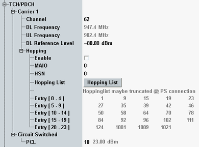

The following parameters configure basic TCH/PDCH settings.
If the downlink dual carrier mode is enabled, most TCH/PDCH parameters can be configured individually per carrier, see also "DL Dual Carrier".

All parameters below are configurable per carrier. Exceptions are explicitly stated.
The carrier two is only visible if enabled, see "DL Dual Carrier".
For background information, see "GSM Bands and Channels" and "Power Control Levels".
GSM channel number for the traffic channel (TCH, for circuit switched connections) and the packet data channel (PDCH, for packet switched connections). For more TCH/PDCH settings, see "Connection Parameters".
TCH and PDCH have equal channel settings, independent from the BCCH settings. The allowed channel range depends on the selected GSM band.
The initial band for traffic channels is selected within the BCCH configuration, but the band of TCH/PDCH can be changed via a handover.
The resulting DL and UL center frequencies are displayed for information.
These settings are ignored if hopping is enabled.
The UL frequency setting is used for both carriers one and two.
Remote command:Absolute level of the TCH and the PDCH in dBm. The range of values depends on the selected output connector ("RF Output > Routing"). The actual generated TCH/PDCH level is modified if an external output attenuation ("RF Output > External Attenuation") is set.
The R&S CMW uses equal levels for the TCH and the PDCH. Depending on the scenario, the "Reference Level" is also used for the BCCH.
In dual carrier mode, both carriers use the same setting.
Remote command:The hopping is configurable as follows.
Enable or disable frequency hopping in the downlink traffic channel.
In GSM networks, frequency hopping is primarily used for error protection in the radio transmission path. It consists of periodically switching over the transmission channels (except BCCH) to other carrier frequencies. The frequency changes after each radio frame so that the dwell time on each carrier frequency is 4.615 ms (slow frequency hopping).
Frequency hopping is controlled by the network. The BTS transfers a hopping list to the mobile station. From this list, the mobile station calculates the radio frequency channel for each TDMA frame number according to an algorithm described in GSM 45.002.
If hopping is enabled before a circuit switched connection is established, the hopping information is sent to the MS in the TCH assignment message. The time of TCH assignment during a circuit switched connection setup depends on the parameter "TCH Assignment".
For packet connections, it is not possible to use the full number of 64 entries of the hopping list. It depends on the current GSM band, how many entries are possible. The R&S CMW uses as many entries as possible. At least 18 entries are always possible.
Option R&S CMW-KS210 required.
Remote command:The mobile allocation index offset (MAIO) determines, together with the hopping sequence number (HSN), which entry of the hopping list is used as first value.
The hopping sequence generation is defined in 3GPP TS 45.002, section 6.2.3. For HSN = 0 the number of the list entry applied to frame number 0 equals MAIO modulo N, with N being the length of the hopping list.
Option R&S CMW-KS210 required.
Remote command:Defines the hopping sequence number (HSN) to be used. The HSN determines in which order the hopping list entries are to be used. HSN = 0 results in cyclic hopping (sequentially go through the hopping list and at the end go back to the start). All other values result in a non-sequential usage of the hopping list.
Option R&S CMW-KS210 required.
Remote command:For configuration, press the "Hopping List" button. A dialog opens where you can activate or deactivate entries and modify the channel numbers. The list is sorted automatically in ascending order.
The "Entry ..." parameters display the currently defined hopping list. The list can contain up to 64 GSM channel numbers - entry 0 to 63.
Option R&S CMW-KS210 required.
Remote command:MS transmitter output level in the TCH timeslot that the MS uses for circuit switched connections. The level is signaled to the MS under test as a power control level (PCL) value in the range between 0 and 31. The corresponding absolute level in dBm is displayed for information. The PCL must be smaller than or equal to the maximum output power of the MS, PMax.
The definition of the PCL range depends on the GSM band; see "Power Control Levels".
Remote command: